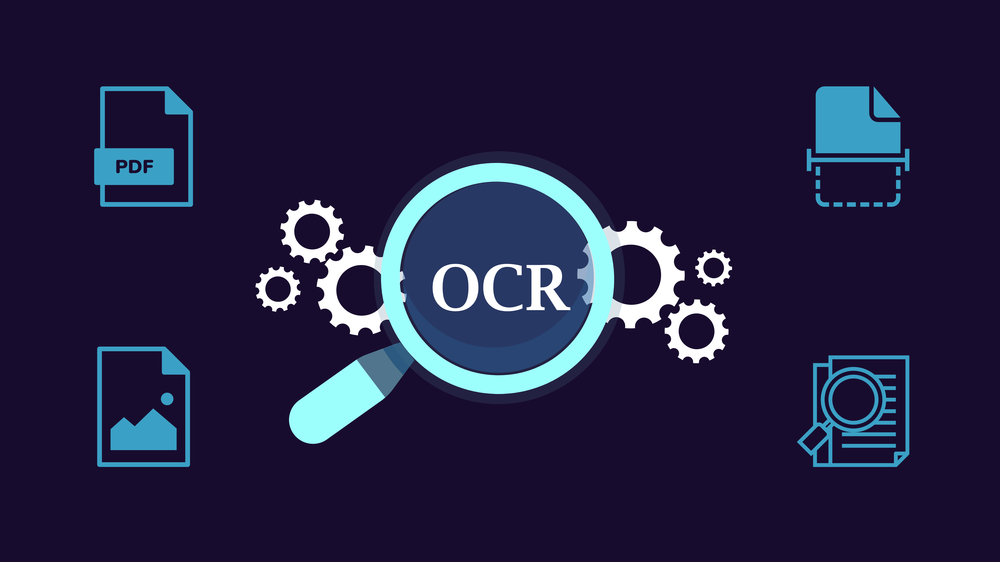

Data Driven Analysis for Startup Investments for Venture Capitalists
Exploring the dynamics of startup investments, this paper delves into the appeal of startups for Venture Capital firms and Angel investors, necessitating thorough assessments encompassing behavioral, founder, and product analyses due to their low success rates. The significance of founder backgrounds in early-stage success is highlighted, alongside the pivotal role of seed and series stage capital in mid-to-late-stage enterprises. Against the backdrop of a burgeoning global startup ecosystem, the paper underscores the importance of initiatives addressing investor challenges, particularly in fundraising, amid governmental support for entrepreneurship and job creation.
Forecasting FAANG Stocks using Hidden Markov Model
This work introduces a novel approach to analyzing FAANG stocks using the Hidden Markov Model (HMM) to forecast potential stock market prices. By training the HMM with historical OHLC (Open, High, Low, Close) data and testing it against recent observations, the study achieves a high accuracy rate of 97% - 99% in predicting the next day's Close price. This research not only contributes to the existing literature on FAANG stocks but also underscores the importance of employing sophisticated analytical systems like the HMM to navigate the volatility and uncertainty inherent in stock markets.

Image Captioning based Smart Navigation System for Visually Impaired
Navigating streets poses significant challenges for visually impaired individuals, who often struggle to interpret basic street signs and their surroundings. This study proposes a novel system utilizing smart spectacles integrating Image Captioning and Optical Character Recognition (OCR) technologies to enhance their navigation experience. The system comprises a camera embedded in the spectacles, alongside modules for Image Captioning, OCR, and Text-To-Speech (TTS) functionality. While the Image Captioning module identifies nearby signboards, the OCR module extracts text information, subsequently converted to voice notifications by the TTS module, facilitating accessibility for the visually impaired. This innovative approach not only simplifies street navigation but also enhances comprehension of signboards, optimizing the utilization of available resources. With multilingual capabilities in English, Hindi, and Marathi, the model caters to diverse linguistic needs, promising broader applicability across communities.